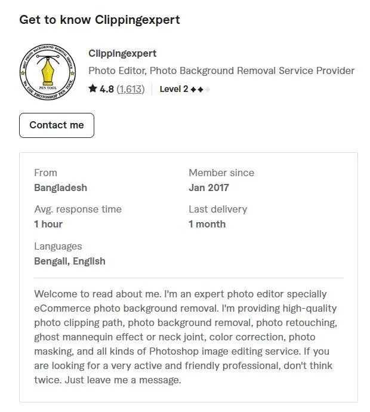
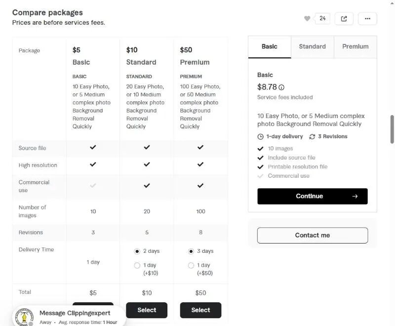
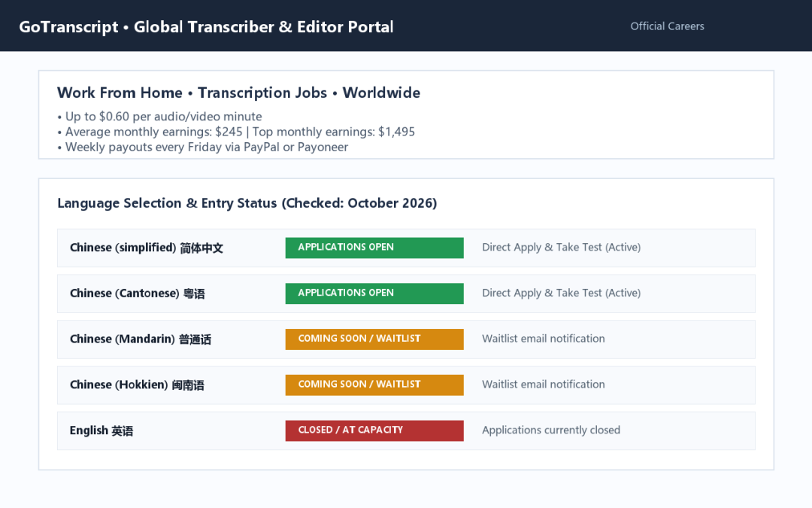
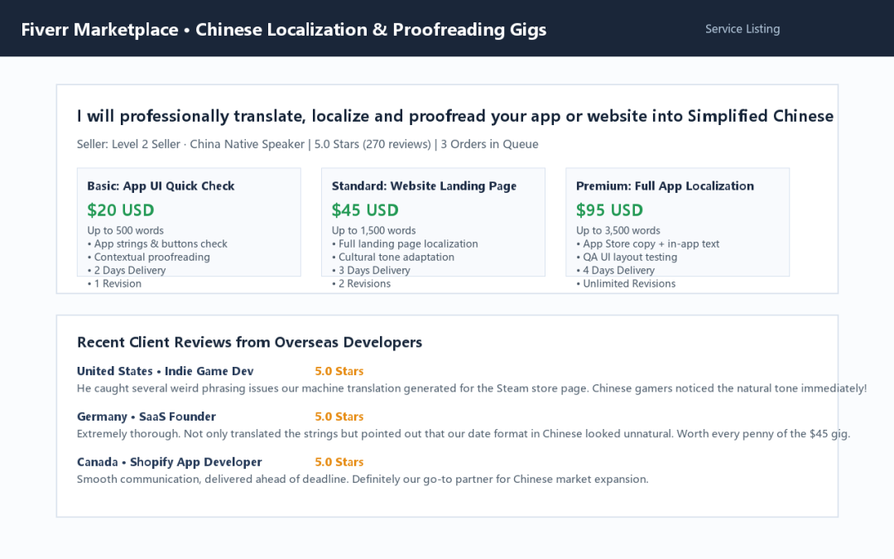
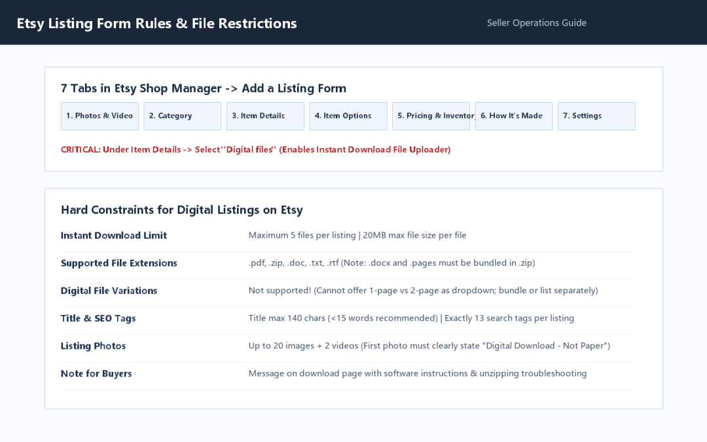
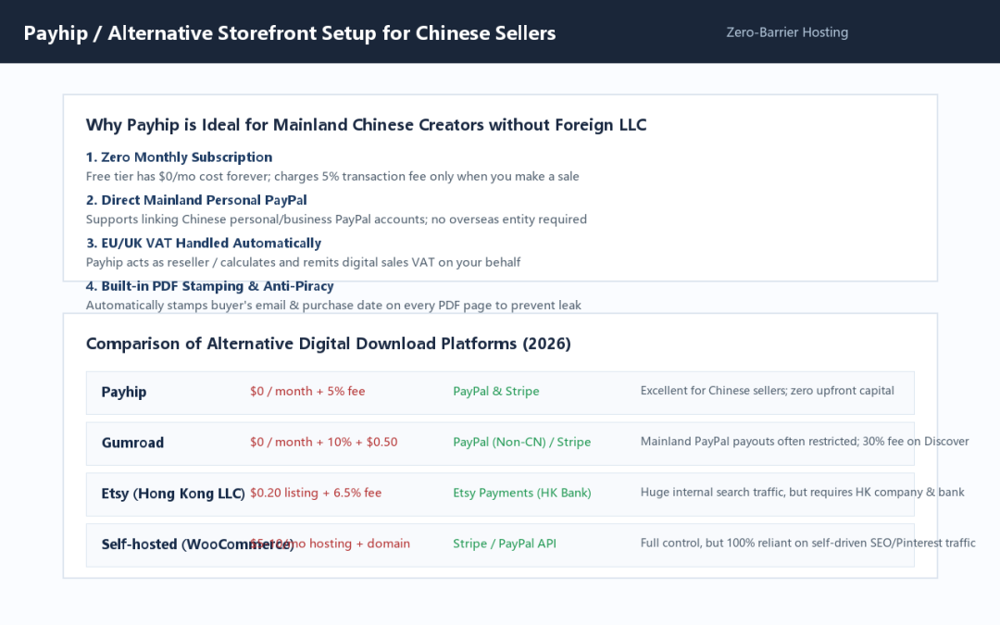
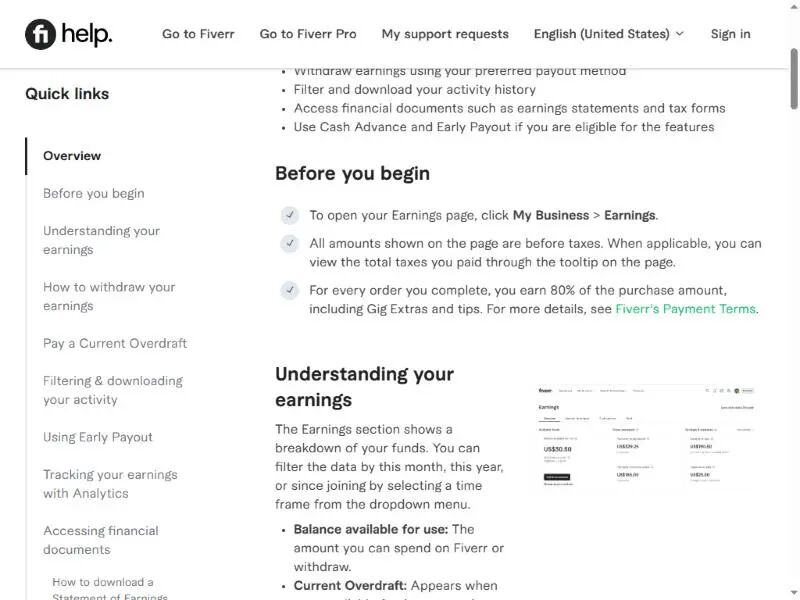
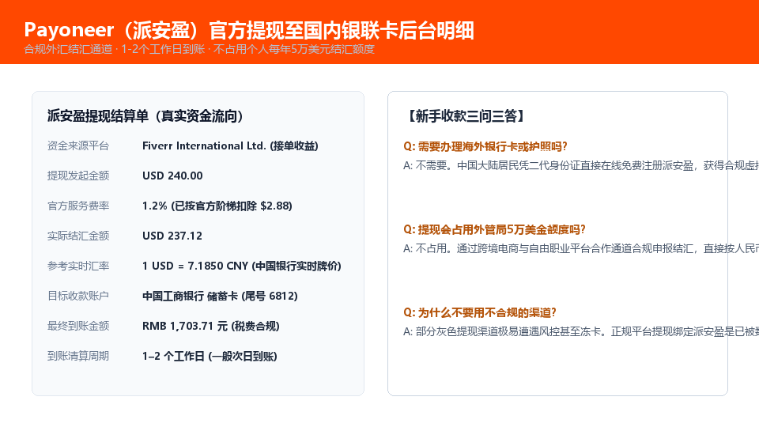

我当年在海外租房那会儿，干过一件现在想起来都觉得荒唐的事。
那天我的英国老房东戴着老花镜，坐在厨房餐桌前，对着一张手写的退租物资清单叹气叹了一下午。那张纸上的字迹被咖啡渍泡得半模糊，上面列着各个房间要清理的家具、地毯和窗帘尺寸。老头打算拍照发给当地保洁公司报价，但他用老旧手机拍出来的照片又黑又斜，背景里还堆着吃剩的面包屑。保洁公司的人在邮件里回他：“先生，字迹看不清，而且规格太乱，我们无法给出准确估算。”
老头急得直挠秃顶，嘴里念叨着要开半小时车去镇上的快印店找人重新打字。我实在看不过去，把那张破纸拿过来，用手机扫描软件拍平，顺手在电脑上拉了个清晰的表格，把长宽高换算整齐，前后花了不到十分钟打印出来递给他。
老头盯着那张白白净净、带边框的表格，两只眼睛瞪得像铜铃，猛地抓住我的胳膊喊：“My god，you are a wizard（你是个巫师吧）！”接着硬是从钱包里掏出一张皱巴巴的20英镑现金拍在我手里。
那天晚上我揣着那20镑去超市买牛肉，脑子里反复就转着一个念头：在我们眼里随便动两下手指的常识，在很多海外老外眼里，不仅不是常识，而且是一件值得掏钱请“专业人士”搞定的麻烦事。
很多人一聊到出海副业，脑子里就浮现出极其宏大的场面：要么得懂深奥的英文写长篇大论，要么得自学独立站代码投几千刀广告，要么得去亚马逊压几万块钱库存漂洋过海。结果大钱没见着，先把自己折腾得筋疲力尽。
实际上，海外线上商业生态里常年养活着一大批做“微型服务”和“轻量数字资产”的普通人。欧美大量的个人小卖家、双语博主和中老年退休群体，每天都被一堆极其琐碎、但平台又卡得很死的格式问题折磨。他们不想学，也没耐心学，只要有人能把现成结果整整齐齐端到他们面前，他们掏5美金、20美金的速度，比你点外卖还痛快。
今天我挑3个真正不需要高深英语、不用写一行代码、中国人天生带点效率优势的海外轻副业，把谁在掏钱、拿什么交付、怎么把钱合法收回国内卡里，一条条扣开讲透。

一、海外小卖家的刚需：白底商品图与尺寸标注
只要有人在海外网上卖东西，这项需求就永远干涸不了。
欧美这几年手作电商平台（像Etsy）和小独立站（Shopify）极其火爆，很多全职妈妈、退休大爷在自制蜡烛、编毛线帽子或者做木工托盘。货做得很漂亮，但一到上架就傻眼——他们自己拿手机在客厅茶几上拍的照片，背景不是沙发就是猫粮盆，杂乱不堪。
更关键的是规则门槛。如果你做过亚马逊或者各大海外市集，就会知道各大平台的Listing规范有多死板：主图背景必须是纯白色（标准RGB代码255, 255, 255），商品主体必须占据整个画面的85%以上，而且绝对不能有阴影遮挡主要结构。很多欧美小卖家根本不会装Photoshop，在他们认知里，“抠图修图”属于好莱坞特效级别的技术活。
在自由职业平台Fiverr或者Upwork上，有一类常年排在热搜榜的单子：Background Removal & Product Infographic（商品去背景与尺寸图）。

买家发给你5到10张他们用手机随便拍的原图，你的任务极其明确：
1. 把商品主体完整抠出来，换成纯白底；
2. 加上一层自然的高级微投影，让东西看起来像摆在专业摄影棚里；
3. 根据客户给的尺寸数字，在图片两边拉上整齐的双向箭头，标上长宽高（比如 12英寸长 x 8英寸宽）。
如果你在十年前做这个，确实得拿着钢笔工具在PS里一笔笔抠。但在今天，利用国内大家早就用顺手的在线工具，或者像Canva、PhotoRoom这类免安装网页，上传原图点一下“一键智能抠图”，发丝边缘和复杂阴影三秒钟就自动剥离。你唯一要花点心思的，是用里面的现成标尺模板，把客户写在纸上的尺寸规范打上去。
算一笔实在账：Fiverr上的基础套餐一般是5张白底图10美元，如果加上尺寸标注和阴影，一套能卖到30到50美元。熟练之后，做完一套图大概耗时15到20分钟。你交付的是老外合规上架的通行证，他省掉了买单反相机和被平台拒审的麻烦，这笔买卖两边都觉得划算。
二、双语视频与播客：中英双语字幕对轴与敏感词清理
随着这几年中国文化、跨境出海和留学生话题在海外走红，YouTube、TikTok以及苹果播客上冒出了一大批做跨文化、中文教学、商业观察的海外创作者。
这些创作者大部分懂基础中文，有的甚至能讲一口流利的普通话，但他们有一个共同的死穴：打中文极慢，且根本搞不清中文的标点断句和特定专有名词。老外做一期20分钟的访谈视频或者音频播客，如果用纯英文自动生成字幕软件，遇到中文人名、地名、行业黑话（比如把“拼多多”机翻成“spell a lot”），出来的字幕经常荒诞得没法看。

在主流转录平台GoTranscript以及Fiverr上，专门有一格常年招人的分类：Chinese Subtitles & SRT Time-sync（中文双语字幕与时间轴对齐）。
老外客户发给你一段视频或音频母带，交付物通常只要一个几十KB大小的 `.srt` 字幕文件。核心要求就两点：第一，时间轴卡点准确，人开口字出来、人闭口字消失；第二，帮他把发音含糊的词订正，顺便删掉语音里多余的“嗯、啊、那个”等口头禅。

国内的新手做这个有天然的降维优势。你不需要自己去逐秒听写，把音视频文件直接拖进剪映电脑版，点击“自动识别字幕”，几分钟内整轨的时间轴和文字初稿就全部跑出来了。
你真正要做的是人工校对：
- 扫一眼屏幕，把机翻错的同音字纠正；
- 检查每一行字幕长度，中文控制在12到16个字以内，长了就按语义敲一下回车拆成两句；
- 导出SRT文件发给客户。
GoTranscript对中文语言类转录的官方结算标准一般在每音频分钟0.80到1.50美元；如果是Fiverr上的独立接单，一期半小时的中英双语视频字幕，打包收费通常在30到60美元。你靠剪映打底，人工复核花半小时，赚的是母语者的敏锐度和工具组合带来的时间差。
三、海外中老年人的解压刚需：大字版数字字谜与填色PDF
前两项是按次计费的服务型副业，这一项则是真正的“轻资产数字产品”——做出一套文件，在货架上挂一年，被老外反复下载。
很多人不知道，欧美老龄化程度非常深，在欧美退休老人圈子里，玩数独（Sudoku）、单词搜索（Word Search）和填色图，不仅是一种消磨时间的日常爱好，而且被医生广泛推荐用来预防老年认知衰退。
但这里面有一个巨大的痛点：普通超市买的报纸和字谜书，为了省纸，字号往往只有8到10磅，密密麻麻像蚂蚁爬。老花眼看五分钟就头晕眼花。所以海外市场上有一个极其垂直且长盛不衰的细分门类，叫做 Large Print（大字版，字号在20磅以上）。

老外买回去根本不需要你邮寄纸质书，他们买的是排版好的高清PDF文件，家里有家用打印机，买完直接点打印，给家里的父母或自己每天做两页。
做这种东西，完全不需要你懂什么高级排版。网上有大量免费开源的数独和填色生成工具，你只要选定难度等级，一键就能批量生成出成套的矢量线框图。

把它们做成标准商品的步骤非常轻：
1. 打开Canva或办公软件，建立标准的美国信纸尺寸（US Letter，8.5 x 11英寸）；
2. 每一页放一个大字号的数独或字谜，顶部留出日期和得分横线，字号设置在24磅以上，字体选粗黑清晰的无衬线体；
3. 一本装配30到50页，最后一页附上小号答案对照表，导出为打印级PDF；
4. 挂到Payhip或Gumroad等面向全球买家的独立数字产品货架上，标价4.99到6.99美元。
买家在海外通过信用卡或PayPal付款，系统在几秒钟内自动把下载链接发送到对方邮箱，全程不需要你在线客服，也不用你发国际快递。这种大字版产品由于针对的是刚需痛点，老外买完甚至还会因为字迹清楚在评价区给你留一段真挚的长评。
四、最关键的一步：美金怎么稳稳落进国内银行卡？
聊副业不讲清楚收款和结汇，那就是纯粹耍流氓。很多新手最怕的就是：“我在平台上赚了美金，到底能不能合法转回国内？会不会被冻卡？”
这里把正规的闭环链路给大家讲得明明白白。

首先是平台的结算规矩：
- 在Fiverr、GoTranscript这类正规平台，买家下单时钱是先交由平台托管的，等你在后台提交文件、买家点击验收通过后，这笔钱才会进入你的卖家账户余额。
- 平台通常会扣除20%的技术服务费（比如30美金的单子，实得24美金）。虽然抽成不低，但好处在于它完全隔离了海外客户的跑单风险。
那么，平台余额里的美金怎么提出来？
千万别听信网上某些偏门教程去买什么海外假身份或乱倒虚拟币，那些违规操作极易封号冻结。合规的操作只有一条标准化阳光链路：平台余额 -> 绑定海外合规收款工具 -> 直接结汇至国内普通银联银行卡。

目前最成熟、国内官方完全支持的工具是 Payoneer（派安盈，俗称P卡） 或 PayPal中国个人卖家账户：
1. 你在Payoneer官网上用中国大陆居民身份证注册一个个人账号，它会自动分配给你一个合规的虚拟海外收款账户；
2. 把这个收款信息绑定到Fiverr、GoTranscript或Payhip后台；
3. 平台清算期一过，你点击提现，美金自动划转到你的Payoneer账户里；
4. 在Payoneer后台直接绑定你自己的国内银行卡（工商银行、招商银行、建设银行等普通借记卡均可），点击“提现至本地银行”；
5. 资金由国内合作银行走正式货物与服务贸易结汇通道，直接按当天外汇牌价折算成人民币到账。
这套链路最让人踏实的地方在于：它是完全合法合规的人民币直结，不占用个人每年5万美元的便利化购汇结汇额度，每一笔都有海外平台的完税交易流水支撑，踏踏实实，睡得安稳。
五、海归的写在最后
写了这么多，我并不是想把海外副业描绘成一个弯腰就能捡黄金的地摊。
商业的世界极其朴素：不管是国内还是海外，钱永远不会凭空产生。老外之所以愿意为你掏5美金、20美金甚至50美金，根本不是因为你比他聪明，而是因为他遇到了一个当下的具体阻碍，而你手上的工具和细致刚好能帮他跨过去。
很多人常年把“想做副业”停留在嘴边，今天担心英语口语不够流利，明天发愁不懂顶级商业模型。其实出海最忌讳的就是一开始就去对标大公司。把身段放下来，看看那些不起眼的小缝隙：一个杂乱的背景、几句对不准的字幕、一份字太小的老人字谜，把这一件件微小的事情打磨干净。
这个周末，你可以试着打开电脑，选一个自己最不反感的小方向，别急着赚大钱，先试着为自己做一份合格的交付样稿。当你第一次看到海外买家在后台给你打下五星好评、第一次看到美金账单变成银行卡里的余额短信时，你对这门生意的认知，就彻底不一样了。